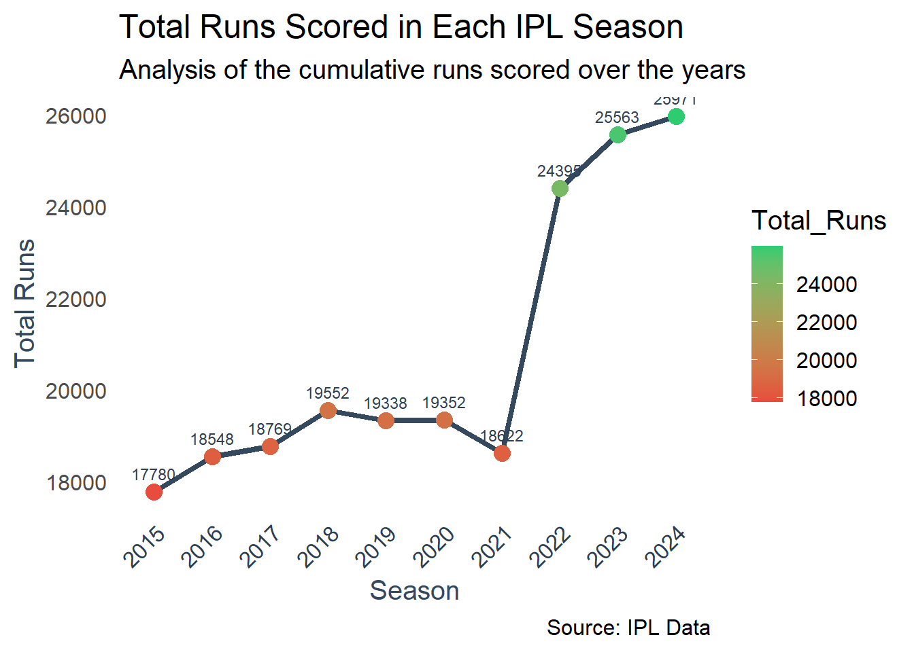
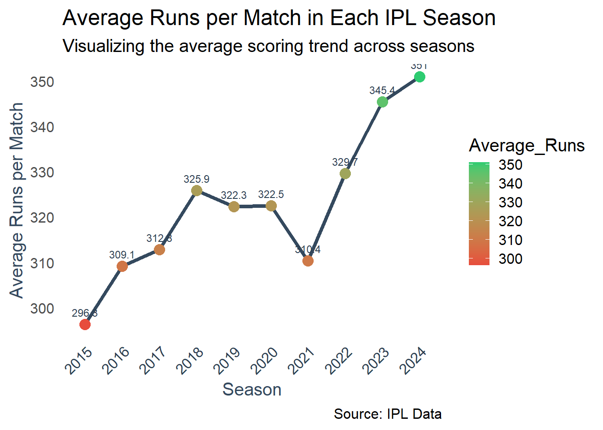
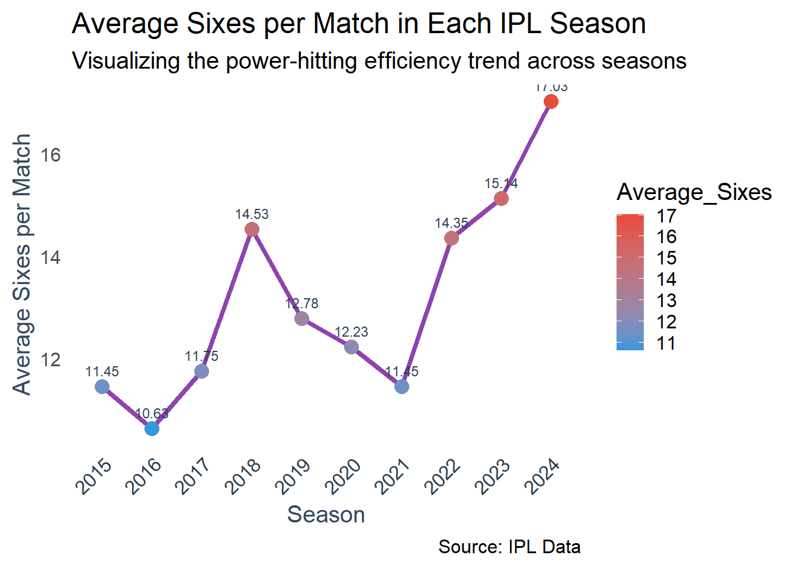
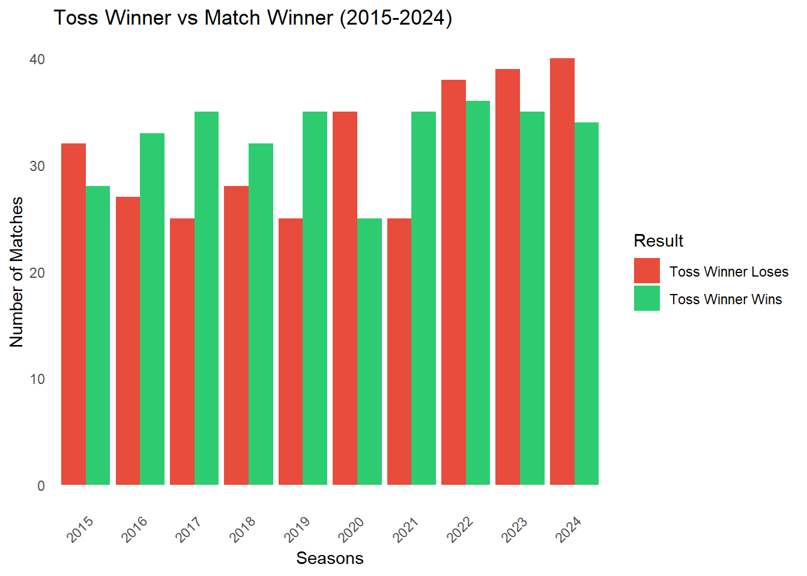
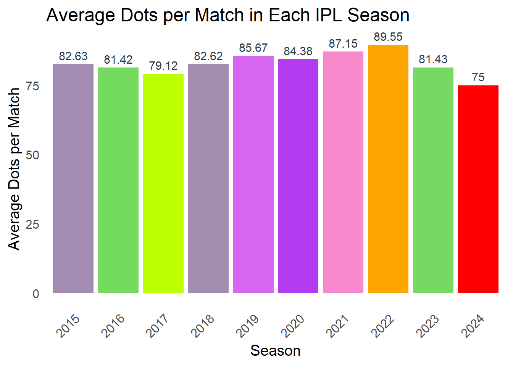
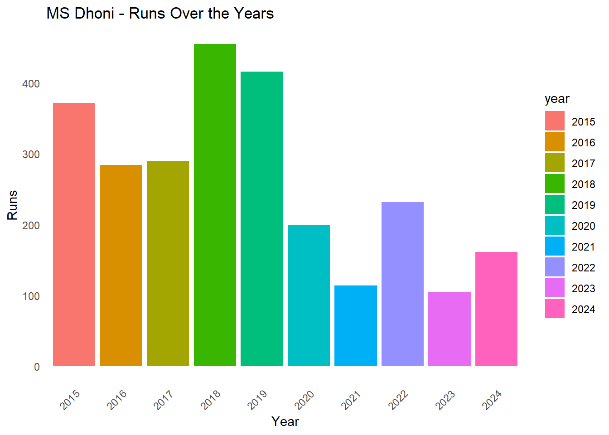
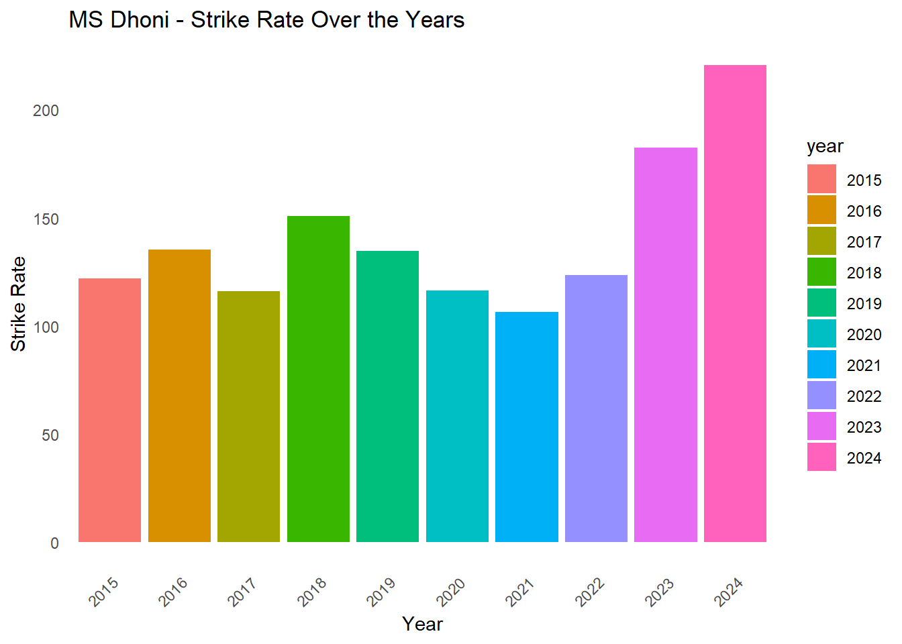
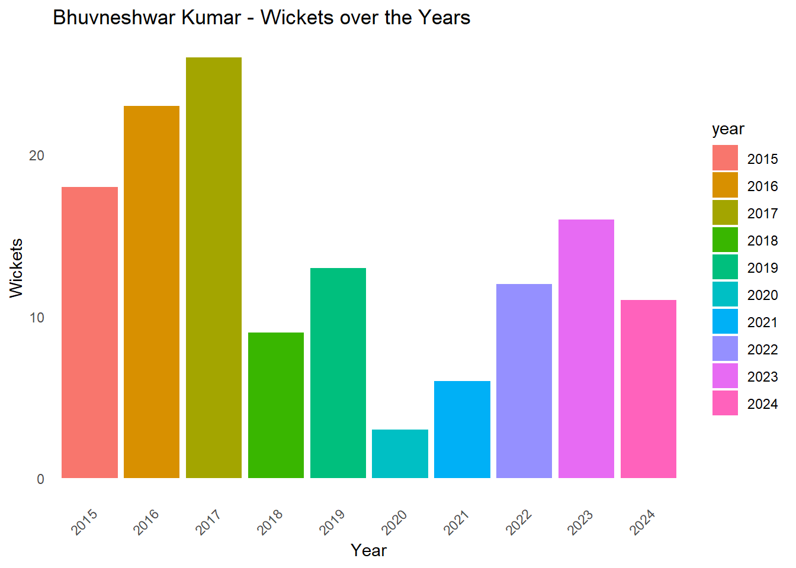
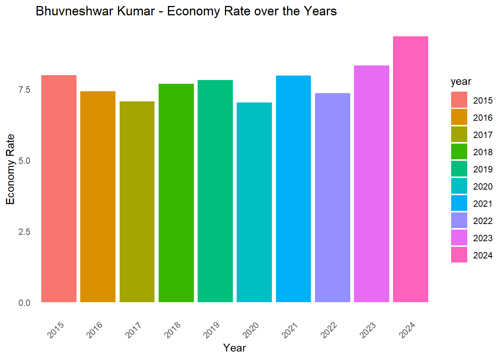

IPL NEXUS
Introduction
The Indian Premier League (IPL) is a premier Twenty20 cricket league in India, founded in 2008. Featuring teams representing major Indian cities, the IPL showcases top global talent through intense, fast-paced matches. Over the years, iconic players like Virat Kohli, AB de Villiers, and MS Dhoni have made memorable contributions, expanding cricket’s global reach and captivating millions of fans.
IPL Nexus is a data visualization app offering insights into player and team performances over the past decade. Aimed at analysts and fans, it serves as a comprehensive resource for simplified IPL data, enabling deeper insights into match trends and player form.
Before exploring the app, let’s dive into the datasets.
Data
We compiled IPL match data from ESPN CricInfo, spanning the 2015 to 2024 seasons. This dataset includes details of each match, such as batting and bowling scorecards, forming a robust foundation for analysis of match trends and player performances.
Dataset Overview
1. Match Data
This segment contains all relevant match details for each IPL season in the last decade. The datasets are as follows:
- Match Data (2015 - 2024):
MatchData_20XX.RDatafor each season - Stadium Data:
stadium_data.RDatawith details about all 31 IPL venues - Combined Match Data:
total_match_data.RDatawith a unified view of all matches - Team Performance Data:
combined_team_data.RDatadetailing team metrics over the decade
Dataset Details
a) MatchData_20XX.RData
Each yearly dataset includes the following columns:
- Match_Id (int): Unique match ID (first 4 digits indicate year, last 2 indicate match number)
- Match_Date (chr): Date of the match
- Match_Timing (chr): Time (Night/Day-night)
- Venue (chr): Venue of the match
- Team_1 & Team_2 (chr): Competing teams
- Toss_Winner (chr): Team that won the toss
- Toss_Decision (chr): Toss-winning team’s choice
- Team_1_Score & Team_2_Score (chr): Scores of the teams
- Winner (chr): Winning team
- Result (chr): Outcome of the match
- POTM (chr): Player of the match
b) stadium_data.RData
Details for each IPL venue:
- Venue (chr): Venue name
- Matches (int): Total matches played
- Total_dots (num): Total dot balls bowled
- Total_fours (num): Total fours hit
- Total_sixes (num): Total sixes hit
- Average_score (num): Average score per innings
- Average_wickets (num): Average wickets per innings
c) total_match_data.RData
This dataset consolidates all match records and includes additional details:
- Match_Id (int): Unique match ID
- Match_Date, Match_Timing, Venue: Date, timing, and venue
- Team_1, Team_2, Toss_Winner, Toss_Decision: Team names, toss winner, and decision
- Team_1_Score, Team_2_Score, Team_1_Wickets, Team_2_Wickets (num): Scores and wickets
- Winner, Result, POTM, Sixes, Fours, Dots: Outcome and summary of the match
d) combined_team_data.RData
Team performance details over the last decade:
- Team (chr): Team name
- Matches (num): Matches played
- Highest_Score, Lowest_Score, Total_Runs, Total_Wickets (num): Scoring and wickets stats
- Wins, Win_Percentage (num): Wins and win percentage
- Image (chr): Team logo filename
2. Batting Data
This segment includes data for each batsman’s performance in every IPL season from 2015 to 2024. The datasets are as follows:
- Batting Data (2015 - 2024):
batting_data_20XX.RDatafor each season - Combined Batting Data:
combined_batdata-main.RDatawith aggregated player performance - Total Batting Data:
total_bat_data.RDatadetailing match-by-match records
Dataset Details
a) batting_data_20XX.RData
Each season’s dataset includes:
- Match_Id (int): Unique match ID
- Team (chr): Team name
- Dismissal (chr) : Mode of dismissal
- Runs (chr) : Runs scored
- Balls (chr) : Balls faced
- 4s : Number of 4s
- 6s : Number of 6s
- Strike Rate : Strike Rate of the batsman
b) combined_batdata_main.RData
Aggregated player performance data:
- Name (chr): Player’s name
- Matches (int): Matches played
- Teams (chr): Teams represented
- Runs, Balls, Fours, Sixes, Ducks (num): Batting stats
- Strike Rate (num): Overall strike rate
- Yearly Runs, Balls, Strike Rate (2015 - 2024): Yearly breakdown of stats
c) total_bat_data.RData
It contains the same columns as that of each batting_data_20XX.RData. It is the combined data of all season’s batting data.
3. Bowling Data
This segment includes data for each bowler’s performance in every IPL season from 2015 to 2024. The datasets are as follows:
- Bowling Data (2015 - 2024):
BowlingData_20XX.RDatafor each season - Combined Bowling Data:
combined_bowldata_main.RDatawith aggregated player performance - Total Bowling Data:
total_bowl_data.RDatadetailing match-by-match records
Dataset Details
a) bowling_data_20XX.RData
Each season’s bowling data with columns:
- Match_ID (int): Unique match ID
- Team (chr): Team against which the player bowled
- Name (chr): Bowler’s name
- Overs (num): Overs bowled in the match
- Maidens, Runs, Wickets Taken, Economy, Dots, Fours, Sixes, Wides, No Balls (num): Bowling performance stats
b) total_bowl_data.RData
Comprehensive match-wise data for each bowler across all seasons:
- Match_ID (int): Unique match ID
- Team, Name, Overs, Maidens, Runs, Wickets Taken, Economy (chr/num): Basic performance data
- Dots, Fours, Sixes, Wides, No Balls (num): Detailed bowling performance in each match
c) combined_bowldata_main.RData
Aggregated year-wise performance for each bowler:
- Name (chr): Bowler’s name
- Matches (int): Total matches played
- Teams (chr): Teams played against
- Runs, Overs, Wickets, Dots, Fours, Sixes, Economy Rate (num): Overall bowling stats
- Year-wise Breakdown (2015-2024): Columns for yearly stats:
runs_20XX,overs_20XX,wickets_20XX,dots_20XX,economy_rate_20XX
Obtaining and Cleaning of Data
All of our data was scraped from ESPN CricInfo. Then we cleaned, grouped and re-organised the extracted data to get our final required datasets.
The final datasets that we used in the making of the app were as follows: total_match_data.RData, combined_team_data.RData, stadium_data.RData, combined_batdata_main.RData, combined_bowldata_main.RData.
To collect each match’s data, we iterated through ESPN’s schedule pages for each IPL season. A significant challenge we faced was that the URLs for these schedule pages changed each year without a consistent pattern, making automated scraping difficult. Consequently, we had to modify the script each time to match the current year’s URLs. We separately gathered match, batting, and bowling data for each season, then merged these datasets to create the final data files used in our analysis.
The NA values were replaced with \(0\) wherever required, to tackle datatype issues. This mainly happened when matches were abandoned due to rain or some other reasons and we had to calculate total runs, wickets etc.
Libraries Used
The following libraries were used by us during scraping and cleaning of the dataset are:
tidyverse
rvest
dplyr
stringr
tidyr
Biases in our Data
Recency Bias
We are taking the data of the last 10 years of IPL completely overlooking the data of the previous years. The pitches are now made focusing mainly on power-hitting, thus it makes the recent trends to vary from the older ones. This can overshadow older but significant performances, leading to an over-emphasis on newer players or strategies.
Survivourship Bias
When comparing long-established teams with new teams, we’re inherently favoring teams with more extensive, varied records, as they’ve had time to show both strong and weak performance phases. Newer teams, lacking this broader history, may look stronger on average, especially if they’ve had a strong start.
Data Availability Bias
Newer teams have fewer games, creating a limited data pool that can make their performance metrics (like winning percentage) seem more favorable simply because they have a shorter history and fewer losses to dilute their record.
Changing Rules and Formats
Adjustments in IPL rules (e.g., changes in playing conditions, playoff formats, DRS introduction, boundary sizes, introduction of impact player) may influence player performance and team strategies over time. Analyzing across different rules might give biased insights if these rule changes are not normalized.
Key Questions
How have batting trends evolved over time like average runs scored in a match, average boundaries hit in a match, etc \(?\)
Does winning the toss have an effect on the outcome of the match \(?\)
With an increase in average number of runs scored, is there a decrease in average number of dots bowled \(?\)
How have a particular batsman performed over the years \(?\)
How have a particular bowler performed over the years \(?\)
How a team performed in comparison to the other teams \(?\)
Important Visualizations
A line plot showing total runs scored in each IPL season
This line plot illustrates the total runs scored in each IPL season from 2015 to 2024, revealing cumulative trends over the years. A steady increase in runs is visible from 2015 to 2018, followed by a slight decline or plateau from 2018 to 2021. After 2021, there is a marked surge in total runs, peaking in the 2023 season, where total runs exceed 25,000. The color gradient emphasizes this peak, highlighting the impressive scoring performances in recent years.
The sudden decrease in 2021 can largely be attributed to the COVID-19 pandemic, which led to disrupted schedules, venue changes, and withdrawals from several players due to health concerns. Matches were split between India and the UAE, and the UAE pitches, traditionally less conducive to high scoring, may have contributed to lower runs. Additionally, the psychological strain of prolonged bio-bubbles led to mental and emotional challenges for many players, likely affecting their performance and, consequently, the overall runs that season.
After 2021, the league witnessed a rapid rise in runs, partly due to the introduction of two new teams, the Lucknow Super Giants (LSG) and Gujarat Titans (GT), which increased the total number of matches per season and thus the scoring potential.
A line plot showing average runs scored per match in each IPL season

However, this alone doesn’t fully explain the trend, as the average runs per match also show a similar rise. This suggests that factors beyond match count contributed to the scoring surge. New rule changes, such as the “impact player” rule, allowed teams more flexibility, encouraging aggressive, high-scoring play. Pitch curation also seemed more favorable to batting, especially evident in the 2024 season, where teams frequently surpassed 250 runs in a single game. This combination of factors—expanded teams, favorable playing conditions, and strategic changes—has driven the notable growth in scoring seen in the IPL’s recent seasons.
A line plot showing average sixes per match in each IPL season

The trends in average sixes per match closely mirror those of the average runs scored per match, reflecting similar underlying factors. Following a steady scoring phase up to 2018 and a plateau through 2021, the surge in both metrics after 2021 highlights the impact of improved batting conditions. The introduction of more batting-friendly pitches has encouraged higher scores, and teams have increasingly strategized around power hitting, leading to more sixes.
Bar plot showing how many times a toss winner won and lost the match

This bar chart compares the outcomes of IPL matches from 2015 to 2024 based on whether the toss winner also won the match. The chart shows two categories: matches where the toss winner also won (green) and matches where the toss winner lost (red).
The data suggests a relatively balanced trend, with no consistent advantage for toss winners across all seasons. However, certain years, like 2016, 2018, and 2020, show a higher number of losses for toss winners, indicating that winning the toss did not guarantee victory in those seasons. In more recent years (2022-2024), the difference between toss winners winning and losing has narrowed, suggesting that teams have improved at adapting to conditions regardless of the toss outcome.
Overall, while winning the toss provides some strategic advantage, this chart illustrates that it does not consistently determine match outcomes.
Average number of dot balls in each match in each IPL season

The chart of average dot balls per IPL match from 2015 to 2024 highlights evolving batting strategies. From 2015 to 2020, dot balls remained steady, with balanced play between aggression and caution. In 2021 and 2022, dots increased, likely due to COVID disruptions, bio-bubble fatigue, and a cautious approach, aligning with a dip in total runs. However, in 2023 and 2024, dot balls dropped significantly, reflecting an aggressive batting trend. New teams, the impact player rule, and batting-friendly pitches contributed to higher scores and fewer dot balls, with teams regularly crossing 250 runs in 2024.
Batsman Performance Analysis
In our shiny app , you can find the relevant analysis of any batsman you want. For e.g. MS Dhoni


We can see that MS Dhoni’s total runs have decreased over the years, largely due to his role as a finisher, where he often batted in the death overs. As Dhoni’s role evolved, his strike rate has notably increased, reflecting his ability to accelerate scoring in the final overs of innings.
Bowler’s Performance Analysis
In our shiny app , you can find the relevant analysis of any bowler you want. For e.g. Bhuvneshwar Kumar


For Bhuvneshwar Kumar, we can say that his fluctuating wicket-taking ability over time can be attributed to factors like form, fitness, and injuries where as his economy rate has remained relatively stable over the years, reflecting his consistent ability to control the flow of runs. This stability highlights his precision and effectiveness in maintaining pressure on the opposition.
Conclusion
We developed an app tailored for cricket enthusiasts, allowing them to dive deep into IPL data from the last ten years, adding a new layer of excitement to cricket conversations. The app offers fans a unique opportunity to explore individual player stats, career achievements, and in-depth analyses, making it a valuable tool for anyone interested in the game’s intricacies.
Some interesting insights :
- Trends in Runs and Boundaries: The app reveals a clear upward trend in runs and boundaries scored across IPL seasons, highlighting the increasingly aggressive approach to batting.
- Toss and Match Outcomes: Users can explore data on toss outcomes, showing that winning the toss doesn’t necessarily provide a winning advantage.
- Dot Balls Analysis: Contrary to expectations, the increase in runs hasn’t led to a significant decrease in dot balls, except in the last two seasons where batting-friendly pitches played a role.
Our app also provides comprehensive data for each batsman and bowler, along with year-wise performance, enabling fans to analyze player abilities, form, and trends. Additionally, a team comparison feature allows users to evaluate teams side-by-side for strategic insights.It enables users to make data-driven decisions and understand team trends.
References
- Data was scraped from ESPN Cric-Info.
- Franchise logos downloaded from Stickpng.
- R documentation was useful for finding functions in base R.
- Unleash Shiny was helpful in enhancing the UI.